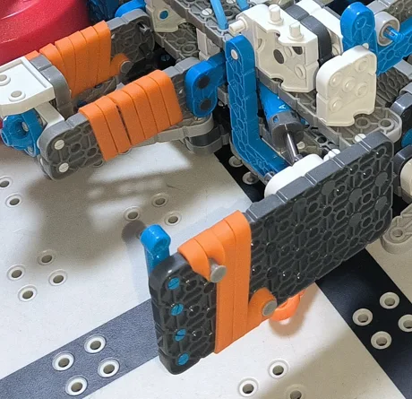
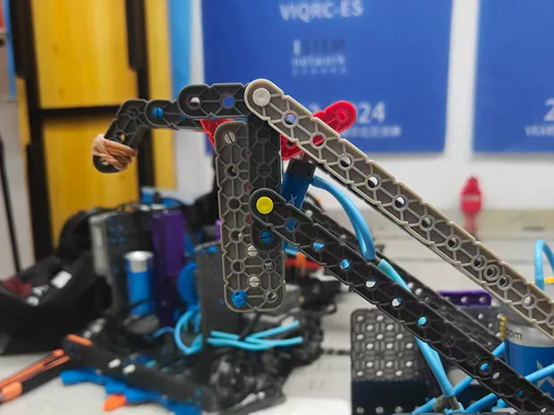
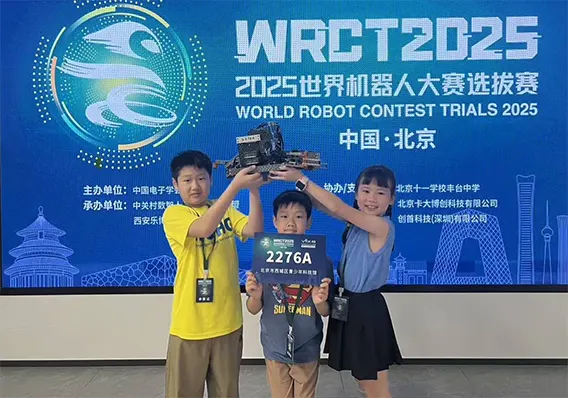
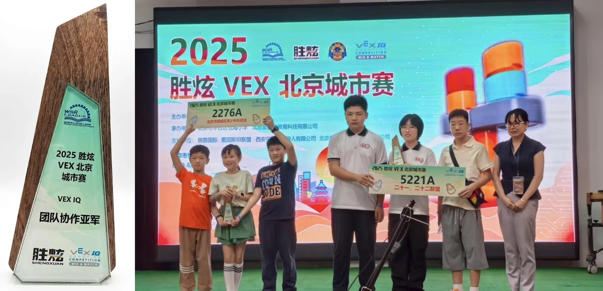

This chapter records the performance testing of "Gen 1" after assembly, and its real-world performance in the "WRC Beijing Qualifier" and "Beijing Urban Competition."
Through detailed logs (June 30 - Aug 12), we review technical bottlenecks in movement, grabbing stability, and autonomous control, along with our engineering fixes.
Core Task: Evaluate the Gen 1 design, verify 91/110 point strategies, and provide data for the development of Gen 2.
In early tests, we found the pneumatic claw slipped on smooth Pins, and the chassis had significant drift.
Date: June 30, 2025 | Location: Jianwai SOHO

In practice for "two-layer stacking" and "Beam dragging," we fixed hook slippage and stability issues, letting the driver complete complex moves smoothly.
Date: July 6, 2025 | Location: Jianwai SOHO

To help the driver during intense matches, we added sensor-assisted logic based on July 6th feedback.
Software Update: Auto-Grab
Background (July 6th Recap): Driver had to do too much manual micro-adjusting, leading to fatigue and errors late in the match.
Technical Fix: Integrated the front Distance Sensor.
Time: July 16, 2025
Content: Full-process simulated match
Purpose: Expose non-mechanical teamwork issues
Just a month before the Beijing City Competition, we did a full simulation. It exposed some serious teamwork gaps:
Event: 2025-2026 WRC (World Robot Contest) Beijing Qualifier
Time: July 18 - 20, 2025
Location: Beijing No. 11 School Fengtai Middle School
Goal: Qualify for the WRC National Finals in August.
Our first time facing a formal, large-scale event. The schedule was packed!
Allies: 71548B, 1853A, 12609A, 88299C, 1853C
Schedule Shock: Seeing three pages of matches was overwhelming. We spent a lot of time just highlighting our team number.
Alliance Challenges: It was loud and crowded! Finding our partners was harder than expected. We learned the importance of "loud communication" and being proactive.
Partner: 12609A
Phenomenon: During a turn to stack on the tower, the robot just died. Buttons didn't work, and the screen went black.
Handling: Signaled the ref, but couldn't restart it. We had to quit the match.
Result: 0 points (really hurt our ranking).
Despite the failure, we did well enough in other matches to make the finals!

| Category | Issues | Action Items |
|---|---|---|
| Process |
Too Passive Wait for partners to find us, losing practice time. |
Create an "Alliance Script" and proactively find partners according to the schedule. |
| Strategy |
Rigid Routes If Pins were scattered, we didn't know how to adapt. |
Add "Messy Field" simulation drills to practice recovery strategies. |
| Logistics |
Power Supply Fail Only brought 2 batteries and no power strip! Very stressful. |
Added "Power Strip" and "Minimum 4 full batteries" to our Mandatory Checklist. |
| Engineering |
Unexpected Shutdown A fatal error during the match. |
Immediate Action: Check battery ports and Brain firmware; perform vibration tests. |
Summary: We qualified, but our logistics and stability issues MUST be fixed before the big finals in August.
To prep for the Shijiazhuang event, we did high-intensity drills focused on high-scoring moves.
Date: Aug 12, 2025 | Location: Jianwai SOHO
Focus: Preparing for the Shijiazhuang Match
Core Training Goals
Review & Summary
Review & Summary (Cont.)
Event: 2025 Beijing Urban Competition (Shengxuan)
Time: Aug 19 - 21, 2025
Robot: Gen 1
We developed scoring models to fit different alliance partners:
| Strategy | Core Actions | Score (Gen 1) |
|---|---|---|
| 91 points (Low Tower) |
- Focus on low tower stacking - Center Zone: 2 matching stacks - Skip Triangle Zone |
105 pts |
| 110 points (High Tower) |
- Push for the High Tower - Center Zone: 2 matching stacks - Requires perfect release timing |
144 pts |
| Skills Match (Manual) |
- Stable route, skip high-risk High Tower | 144 pts |
Even though Gen 1 was slow and had limited reach, our hook and friction claw optimizations made it very stable in real matches.
| Stage | Match ID | Score | Rank |
|---|---|---|---|
| Qualifiers | Match #38 | 249 pts | 8th Place |
| Finals | Finals Match #1-14 | 254 pts | - |
2025 VEX IQ Robotics Competition - Beijing Urban Series

The Beijing Urban Competition proved Gen 1 was a successful "proof-of-concept." It validated our pneumatic design but showed our hardware limits.
Based on our data, here's the plan for the next version:
Decision: Gen 1 is officially retired. Build for Gen 2 starts immediately!